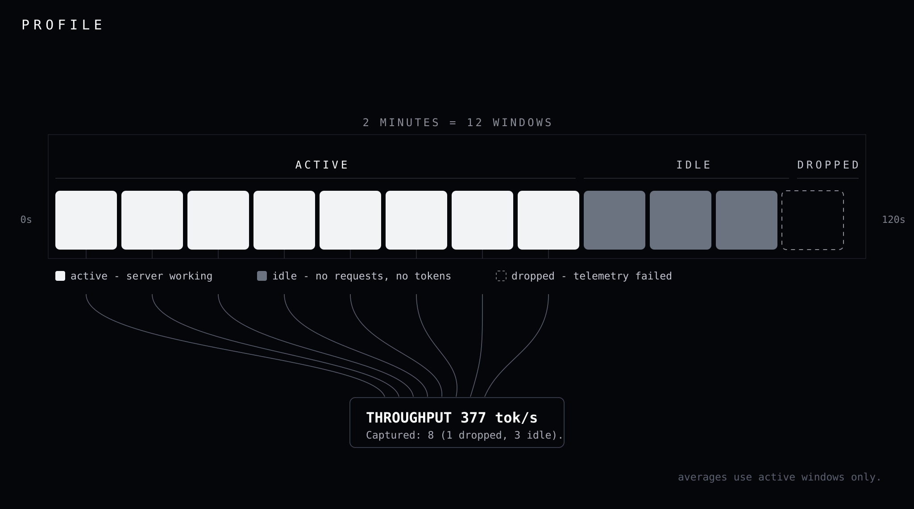

Physics-grounded, cost-aware optimization loop for vLLM inference servers.
Introduction
The Problem: Inference servers run below hardware capacity. Operators cannot see why.
The Solution: Profile computes the hardware ceiling for your model and GPU, measures live throughput against it, and identifies the vLLM startup flags to change.
Profile is not a passive dashboard. It is an interactive optimization loop. It analyzes your vLLM /metrics, pinpoints the primary bottleneck, and prescribes specific vLLM startup flags to fix it.
Start with the Workflow, then Rules. The rest is reference material.
Prerequisites
NVIDIA GPU (NVML) or AMD GPU (amdgpu driver). Profile probes NVIDIA first and falls back to AMD.
vLLM running with /metrics reachable (default http://localhost:8000/metrics).
Active production-like load during the --duration window. Idle servers produce no signal.
Install & Run
# Download
curl --proto '=https' --tlsv1.2 -LsSf \
https://github.com/jungledesh/profile/releases/latest/download/profile-installer.sh | sh
# Start profiling your vLLM server
profile diagnose --url http://localhost:8000/metrics --duration 2m
Or build from source: cargo install --git https://github.com/jungledesh/profile
Optimization Workflow
When sampling ends, Profile prints a summary block. Look at ISSUES. The Fix: tells you what to change in your vLLM startup command.
Read
Profile prints a performance snapshot followed by an ISSUES block. Here is an example. Do exactly what the Fix: section recommends.
+----------------------------------------------------------------------------------------------------------------------------+
|PROFILE v2.1.4 [Qwen3.6-27B] [NVIDIA H100 80GB HBM3] (2m from 2026-07-31 07:13:29 UTC) |
| |
|GPU => decode_eff ~0.9% | power 653W | 3.57 J/tok | $5.09/1M output tok (est) | vRAM 74/80GB (peak 75GB) |
| mem_util 56% |
| |
|vLLM => |
|REQUESTS run 14 (4.0%) | wait 4 | max 345 |
|LATENCY ttft 8.7s (p95 19.2s) | tpot 97ms (p95 159ms) |
|CACHE kv_cache 93.1% avg (100.0% peak) | pfix_cache - |
|THROUGHPUT 163 tok/s |
|TRAFFIC qps 0.5 | req_total 112 | gen_total 32368 | preempt/s 0.01 | preempt_total 2 |
| |
|ISSUES: |
| |
|[!] KV Cache Pressure |
| Seen in 92% of windows |
| Cause: |
| KV cache 94% avg in fired windows, 100% peak (threshold: 88%). |
| 4 requests queued on KV admission. |
| |
| Fix: |
| Cuts throughput: |
| • Lower --max-model-len (current: 262144). Observed avg 13.9k tokens per request, prompt + generation. |
| Some requests are longer than avg; add buffer to it. Requests over the limit are rejected with a 400, not truncated.|
| |
| • Lower --max-num-seqs to reduce KV demand |
| |
| Safe to apply: |
| • Enable --enable-prefix-caching to share KV blocks across identical prompt prefixes |
| • Raise --gpu-memory-utilization (check vRAM header for avail mem) to expand KV pool |
| • Switch --kv-cache-dtype fp8 to halve KV memory footprint (affects output quality) |
| • Set --kv-offloading-size 4 (est) to hold evicted KV in host memory instead of recomputing it |
| Host RAM available: 1953 GiB, container limit 234 GiB. |
| |
| Expected: Wait queue drains, TTFT recovers once KV pool has capacity. |
| Confidence: High |
+----------------------------------------------------------------------------------------------------------------------------+
Every value is measured or marked. A dash (-) means the metric was not readable. (est) means the number came from the physics model. A tilde (~) marks a value derived from an estimated ceiling. Gaps are never filled with guesses.
Note: [!] KV Cache Pressure corresponds directly to rule R2 in the Flag Recommendations Map below.
Restart & Measure
Apply primary and secondary fixes together in one restart. One flag per restart wastes time. Restart vLLM. Profile resumes on vLLM re-start and measures the new baseline. Repeat this process until the bottleneck clears or you reach hardware saturation.
Apply the fix above. Profile re-measures after your change.
Press Enter when done.
Connection restored. Resuming in 5s...
New --max-num-seqs [current: 345]: 170
Measuring delta...
Config changed.
Throughput 163 → 328 tok/s
TTFT 8720 → 495ms (p95 19185 → 950ms)
TPOT 96.9 → 50.9ms (p95 158.7 → 73.0ms)
ECONOMICS:
Cost/1M output tok $5.09 → $2.53 (est)
Notice the throughput dropped? Profile reports regressions honestly. Fixing one bottleneck often exposes the next. Keep iterating; results improve over multiple restarts.
Loop behavior
Same-primary reveal. When the same primary fires again, Profile lists the rules it suppressed under that block. No flat-delta gate: re-fire alone is enough, whether or not you applied a fix in between.
Empty-fix reveal. When the primary has no lever left (fix list empty or exhausted), Profile shows the suppressed alternatives under that same block immediately, without waiting for a second fire.
Dead-end. When no config lever remains, Profile names the wall (replica, or the physics boundary), points at scale-out, and surfaces what it was holding.
Oscillation escape. When R2 (KV pressure) and R5 (concurrency saturation) alternate on --max-num-seqs, Profile names the bracket tried and suggests the midpoint. It offers this at most three times, then names the wall.
Config-skip. Where Profile can read your running config, it skips levers you already set: prefix caching on, fp8 KV already active, chunked prefill on, --max-num-batched-tokens already at or above the suggestion, seats already at the target. Exception: --kv-offloading-size is re-derived on each R2 fire; if the new size differs from what is set, the flag is offered again with the new number (host-RAM subline included). If derived equals set, it stays quiet.
Scale Out
Eventually, no config change will help. You have hit hardware saturation.
+----------------------------------------------------------------------------------------------------------------------------+
|PROFILE v2.1.4 [Qwen3.6-27B] [NVIDIA H100 80GB HBM3] (2m from 2026-07-31 07:52:11 UTC) |
| |
|GPU => decode_eff ~8.1% | power 653W | 0.83 J/tok | $1.18/1M output tok (est) | vRAM 77/80GB (peak 79GB) |
| |
|vLLM => |
|REQUESTS run 345 (100%) | wait 149 | max 345 |
|LATENCY ttft 52.9s (p95 129.2s) | tpot 199ms (p95 295ms) |
|CACHE kv_cache 81.5% avg | pfix_cache 61.6% |
|THROUGHPUT 470 tok/s |
| |
|ISSUES: |
| |
|[!] Concurrency Saturation |
| Seen in 50% of windows |
| Cause: |
| KV at 81.5%: memory wall reached. No config change helps. |
| |
| Fix: |
| • Add a replica to scale out. |
| |
| Confidence: High |
+----------------------------------------------------------------------------------------------------------------------------+
vLLM Flag Recommendations Map
Profile detects these bottlenecks and recommends the following vLLM flag changes:
Diagnosis
When it fires
vLLM flags to change
R1 Under-batching
Known GPU: config-relative efficiency <60% with occupancy <75%, no backlog. Unknown GPU: occupancy <25%.
Batch more requests or raise client concurrency
R2 KV cache pressure
KV ≥88% (avg or peak) AND (eviction: preempt/s >0.02 or swapped ≥2, OR waiting >2)
Rules evaluate on structurally valid windows (window_is_evaluable). A recommendation surfaces only when the signal is persistent: at least 3 windows and at least 25% of all evaluable windows in the run.
Display metrics (like requests_running and requests_waiting) are synced to the final session snapshot rather than locally aggregated window approximations, to prevent visual contradictions between the summary header and the recommendation blocks.
R1: Under-batching
Condition
Threshold
Known GPU: config-relative efficiency
<60% of config capacity (decode ceiling × min(max_num_seqs, ridge))
Known GPU: occupancy
<75% of effective max
No backlog
waiting < 2
Unknown GPU fallback: occupancy
<25% of effective max (same binder as known-GPU: min of config, ridge, observed KV)
R1 still evaluates when R6 (Prefill-bound) fires on the same window; R6 then suppresses it via the mutual exclusivity table so the under-batching recommendation is held for reveal, not silently deferred. Fix names the binding wall: config cap, compute ridge, or memory limit.
Fix: Batch more requests or increase client concurrency.
R2: KV cache pressure
R2 and R2b are sibling rules in the same DAG layer. Both surface KV-related pressure. When both would fire, eval takes R2 and skips R2b (else if), not the mutual exclusivity table. The ME table only silences R2/R2b under R4 weights-alone overflow, and R1 under R6.
Main path (R2)
Condition
Threshold
KV near full (avg or peak)
≥88%
Harm signal (at least one)
preempt/s > 0.02, or swapped ≥ 2, or waiting > 2
Both conditions must hold. KV at 88% with no evictions and no queue is healthy and hot; R2 stays quiet.
The fix block is split into Cuts throughput and Safe to apply. The seat direction line (--max-num-seqs) gives direction only, not a specific ceiling number. --max-model-len shrink prefers observed p99 prompt + p99 gen; falls back to averages when p99s are missing.
--kv-offloading-size: on every R2 fire, Profile re-derives the size (supply-capped by host / container RAM). If the derived value differs from what is already set, the Safe block offers the new number (e.g. set 4, derived 12 → Set --kv-offloading-size 12 (est)) with the Host RAM subline. If derived equals set, the lever stays quiet.
Confidence:windows_fired / total_evaluable. Ranges from Low to High as more windows confirm the signal.
Admission backlog path (R2b)
Condition
Threshold
KV near full (avg or peak)
≥88% (same bar as R2)
Queue ratio
waiting / (running + waiting) ≥ 30%
Free KV tokens
< demand from queued requests (waiting × prompt_tokens_mean)
Concurrency cap
running < max_num_seqs (scheduler not at cap)
Fires when KV is near full and the scheduler is holding requests in queue to protect KV memory, without the R2 eviction/harm fire. The fix is to expand the KV pool, not reduce concurrency.
Fix: Raise --gpu-memory-utilization if VRAM headroom exists; switch to fp8 KV cache; or reduce --max-model-len.
KV near-full uses avg or peak ≥88%. Peak matters because a window can average 70% and still spike to 92%: the spike is what causes preemptions; the average alone can hide it. Peak is also what the header shows when it exceeds avg by ≥10pp or reaches 95%.
R3: Low prefix reuse
Condition
Threshold
Active traffic: running
>0.75
Mean prompt tokens
≥20
Prompt token throughput (QPS × mean prompt)
≥1000 tok/s
Prefix caching off
Fires on volume alone (hit rate not required)
Prefix caching on: hit rate
<35%
Confidence: 0.95 when prefix caching is off (direct fix available); 0.90 when caching is on and hit rate is low.
Fix: If prefix caching is disabled: enable --enable-prefix-caching. If already enabled: move shared instructions to the start, standardize templates, avoid unique tokens at the beginning.
R4: OOM risk
Fires regardless of traffic. Configuration fact, not runtime observation. Does not fire when dtype is bf16 fallback (insufficient information to prescribe confidently).
Two fire paths: (1) kv_headroom_gb < 0, weights overflow. (2) Weights fit but free VRAM cannot hold one worst-case request's KV + state.
Fix:--tensor-parallel-size at the computed minimum; raise --gpu-memory-utilization; use a smaller model; or the model does not fit on this hardware.
The 3.0 GB buffer reserves activation memory. kv_headroom_gb negative means the model cannot run at all on this TP configuration, not just that KV space is tight.
R5: Concurrency saturation
Condition
Threshold
running ≈ max_num_seqs
Within 0.5 (chunked prefill can batch above cap; cap is not the constraint)
Queue ratio
waiting / (running + waiting) ≥ 30%
Waiting floor
≥ 2
R5 fires without a KV <80% gate. The 80% check is in the fix branch only: below it, Profile raises --max-num-seqs to a bounded target; at or above it, Profile names the wall and recommends a replica instead.
Fix: Below 80% KV: raise --max-num-seqs to the bounded target (80% margin on the binding wall). Above 80% KV: name the wall (replica; or lower --max-model-len to shrink KV demand).
Muted when TPOT is measured and under 4× its floor. Still fires when TPOT or floor is missing (confidence capped at 0.5).
R6 fires at DAG layer 5 and, via the suppression table, silences R1 (Under-batching) when it fires. R1 still evaluates so it lands in suppressed_recs for reveal; it is not deferred. A server that looks under-batched but is actually prefill-bound should not receive under-batching as the primary.
Fix: Enable chunked prefill only when it is off or unread as off; raise --max-num-batched-tokens only when the configured value is below the derived suggestion; route shorter prompts. At the compute wall (configured budget already near the derived recommendation, or no knob left): disaggregate or add a replica, and show any suppressed alternatives under the same block.
R7: Config headroom
Condition
Threshold
--max-num-seqs vs recommended target
<90% of the target
Occupancy
≥50% of effective max
Waiting
≤1
Optimistic rule (DAG layer 6). Only fires when no active bottleneck is present. The recommended target is shared with R5: 80% margin on the binding wall (ridge or observed KV capacity). Output names what binds the target.
Fix: Raise --max-num-seqs to the computed target.
Confidence
Per-rule, not a unified formula.
Rule
Confidence
Condition
R1
0.80 (known GPU) / 0.50 (unknown)
Fixed per GPU-knowledge path
R2 / R2b
windows_fired / total_evaluable
Density: rises as more windows confirm the signal
R3
0.95 (caching off) / 0.90 (caching on, low hit rate)
Fixed per caching path
R4
0.95
dtype or quantization from env var (DTYPE/VLLM_DTYPE, QUANTIZATION/VLLM_QUANTIZATION)
R4
0.90
vLLM-reported dtype or quantization, or catalog default
R4
Not fired
weight dtype is bf16 fallback
R5
0.50
Empirical KV bound used
R5
0.90
TTFT and KV cache both present
R5
0.60
One or both absent
R6
0.85 / 0.75 / 0.65 by severity; capped at 0.5 when TPOT unverified
Shared by windowed rules (R1–R3, R5–R7, R2b). A rule that fired once is noise. R4 is exempt: it is a config-fact path from baseline headroom, not a per-window fire count, so it skips this gate.
Rules are ranked by score within the winning DAG layer. The highest-scoring rule in the winning layer is the primary recommendation. All others are held. They surface when the same primary re-fires, or immediately when the primary has no fix left to offer.
DAG layers: R4, R2, R2b at layer 2 (highest priority). R5 at 3. R1 at 4. R3 and R6 at 5. R7 at 6 (lowest). The winning layer is the lowest-numbered layer that has a significant rule. Rules in higher-numbered layers are suppressed when a lower layer wins.
Mutual exclusivity: R4 (weights overflow alone) silences R2 and R2b. R6 (Prefill-bound) silences R1 (Under-batching). These suppressions run before the layer filter. R2 vs R2b is handled separately in eval (else if), not this table.
When no rule fires
If efficiency is still low, a fallback names the shape of the underuse. If nothing fires at all, Profile names the boundary capping a healthy server: capacity, traffic, physics, prefill interference, or framework overhead (PrimaryLimiter). When the GPU or model is uncatalogued and the ceiling itself is unknown, it says that instead of naming a boundary it cannot prove.
Data

Idle and dropped windows are excluded from averages.
GPU and vLLM are scraped in parallel at ~250ms intervals inside each collection window. Window size: 2s when --duration is 30s or less; 10s otherwise. Each window produces one snapshot from ~9 or ~40 polls respectively.
The 1-second observation skew gate (|gpu_observed_at − vllm_observed_at| > 1s) applies only to energy and cost metrics. No rule skips based on skew.
Within each window, different metric types are treated differently:
Type
Treatment
Edge cases
Gauges
Last scrape in the window
kv_cache_peak_perc is max across all scrapes in the window, not last. KV cache can spike and recover within a window; last scrape alone misses it. Shown in output when peak > avg + 10pp or peak ≥ 95%. Same pattern for VRAM peak (≥90% of total) and GPU temp peak (≥80°C).
Histograms
Δsum/Δcount, first to last scrape
Falls back to last-scrape cumulative mean when Δcount ≤ 0 (no new completions in window). p99 has no fallback; stale p99 is worse than none.
Counters
Rates = Δ / window duration. Raw totals from last scrape.
None on counter reset (negative delta) or zero-duration window. Zero delta is valid: no activity, not missing data.
Evaluable window gate
Two-tier gate. Structural validity and active traffic are separate checks.
Tier 1: structural. Did the endpoint respond and does the window have a valid duration? All rules use this check.
window_duration_secs is present and positive
num_requests_running is Some (even if zero)
running = 0 is valid data: the server responded and reported no active requests. None means the endpoint did not respond.
Tier 2: active. Was the server doing real work? Aggregated means use this check. Throughput, efficiency %, GPU utilization, and latency averages are computed over active windows only.
window_is_evaluable(s) && !window_is_idle(s)
// idle: running < 1 AND generation_tokens_per_sec < 1 AND waiting < 1
// (None for any field counts as < 1)
Active is the inverse of idle for evaluable windows. Low numbers are included; blank numbers are not. Idle windows pass tier 1 but not tier 2 and are excluded from the averages.
Multi-window aggregation, which window set applies to which field, is in Math.
Source 1: GPU telemetry
NVIDIA via NVML, or AMD via libamdgpu_top when NVML is unavailable. Polled at 250ms intervals. Same gauge fields either way; FLOPs and bandwidth still come from the GPU catalog.
Field
Type
What it is
How collected
gpu_util_pct
Gauge
Fraction of time any kernel was executing. Not SM occupancy.
Mean across window polls
mem_util_pct
Gauge
Fraction of time the memory controller was busy
Mean across window polls
power_watts
Gauge
Power draw (W)
Mean across window polls
power_limit_watts
Gauge
Driver-set TDP limit (W)
Read when assembling each window's GPU row
vram_used_mb
Gauge
VRAM in use (MiB)
Last poll
vram_total_mb
Gauge
Total device VRAM (MiB)
Last poll
temperature_c
Gauge
GPU core temp (°C)
Last poll
sm_clock_mhz
Gauge
SM clock frequency (MHz)
Last poll
Two values are computed from the polls, not read directly: vram_peak_mb (max of vram_used_mb across all polls) and temperature_peak_c (max of temperature_c across all polls). Derived within the window, not collected.
Neither NVML nor the AMD path exposes theoretical peak FLOPs or memory bandwidth. Those come from the GPU catalog, looked up once at startup from gpu_name, labeled (est) in output. Host RAM (for --kv-offloading-size sizing) is read separately from the host / container memory path.
Source 2: vLLM Prometheus
Scraped from /metrics at ~250ms intervals. See vLLM docs for the full metric reference.
Model catalog. MoE: total for weight/OOM; active for roofline.
Roofline skipped
bytes_per_param (weights)
vLLM-reported quantization → QUANTIZATION/VLLM_QUANTIZATION env → vLLM-reported dtype → DTYPE/VLLM_DTYPE env → catalog default → bf16 (2 bytes). kv_cache_dtype is not in this chain; it sets KV element bytes only.
bf16 fallback, labeled in output
All catalog-derived numbers are labeled (est) in output. Upper-bound approximations, not measured values.
Fallbacks
Field
Primary
Fallback
If absent
max_num_seqs
vllm:max_num_seqs gauge
-m CLI flag
R1 and R5 silent
tensor_parallel_size
--tensor-parallel-size CLI flag
Treated as 1. Values above 1 are refused at launch; multi-GPU is not supported.
BF16 Tensor Core dense TFLOPs and memory bandwidth feed the roofline math. Prices from src/context/gpu_prices.json (updated 2026-07-23). Use --cost-per-hour for exact rates. Table is a common subset; full list including AMD Instinct and additional Blackwell SKUs is in gpu_catalog.rs.
GPU
Arch
BF16 TC Dense TFLOPs
Mem BW GB/s
On-demand $/hr
Spot $/hr
H100 PCIe
Hopper
756.0
2,000
$2.89
$0.90
H100 SXM
Hopper
989.0
3,350
$2.99
$1.75
H200
Hopper
989.0
4,800
$4.39
$2.50
A100 80GB
Ampere
312.0
2,039
$1.49
$0.60
A100 40GB
Ampere
312.0
1,555
$1.50
$0.70
A10G
Ampere
126.0
600
$1.00
$0.40
L40S
Ada
181.03
864
$0.99
$0.80
RTX 5090
Blackwell
209.5
1,792
$0.99
$0.40
RTX 4090
Ada
165.0
1,008
$0.69
$0.35
RTX 3090 Ti
Ampere
80.0
1,008
$0.22
$0.13
RTX 3090
Ampere
71.16
936
$0.46
$0.14
RTX A6000
Ampere
77.4
768
$0.49
$0.40
RTX PRO 6000 Blackwell
Blackwell
250.0
1,792
$1.99
$0.90
B200
Blackwell
2,250.0
7,700
$5.89
$2.00
B300
Blackwell
2,500.0
8,000
$7.39
$7.39
GB200
Blackwell
2,250.0
7,700
$8.50
$4.00
BF16 TC Dense TFLOPs are tensor-core throughput with FP32 accumulate where the catalog distinguishes it (L40S uses 181.03; datasheet 362.05 is FP16-accumulate). GB200 matches B200 physics (superchip name). B300 is Blackwell Ultra at 8 TB/s. A plain "A100" without a size token (80GB or 40GB) will not match. All catalog ceilings labeled (est) in output.
Models
Matched by token against the model name vLLM reports at startup.
Model
Total params
Active params
MoE
Llama 4 Maverick
400B
17B
Yes
Llama 4 Scout
109B
17B
Yes
Llama 3 405B
405B
-
No
Llama 3 70B
70B
-
No
Llama 3 8B
8B
-
No
Nemotron 70B
70B
-
No
Nemotron 8B
8B
-
No
Qwen3.6 27B
27B
-
No
Qwen3 235B
235B
22B
Yes
Qwen3 72B
72B
-
No
Qwen3 32B
32B
-
No
Qwen3 30B
30B
3B
Yes
Qwen3 14B
14B
-
No
Qwen3 7B
7B
-
No
Qwen2.5 72B
72B
-
No
Qwen2.5 32B
32B
-
No
Qwen2.5 14B
14B
-
No
Qwen2.5 7B
7B
-
No
DeepSeek 671B / R1 / V3
671B
37B
Yes
DeepSeek 70B
70B
-
No
DeepSeek 7B
7B
-
No
Mistral Large 3 (675B)
675B
41B
Yes
Mistral Large 123B
123B
-
No
Mixtral 8x22B
141B
39B
Yes
Mixtral 8x7B
47B
13B
Yes
Mistral 7B
7B
-
No
Gemma 4 31B/27B
31B
-
No
Gemma 4 26B
26B
4B
Yes
Gemma 27B
27B
-
No
Gemma 9B
9B
-
No
Kimi K2
1,000B
32B
Yes
GLM 744B
744B
56B
Yes
GLM 32B
32B
-
No
Phi 4 14B
14B
-
No
MoE models: active_param_count drives roofline ceilings; param_count (total) drives weight_gb and OOM headroom. Unrecognized models skip roofline entirely. To add a model or GPU, open an issue or submit a PR to the catalog files in src/context/.
Profile measures behavior under load. Idle time has no waste to find. Ceilings are catalog-derived upper bounds, labeled (est). Missing data stays absent (None), never guessed.
Roofline: hardware ceilings
Baseline inputs
Input
Resolution
roofline_params
active_param_count if present, else param_count. Decode and prefill ceilings, efficiency %, ridge batch size.
weight_params
param_count if present, else active_param_count. weight_gb and kv_headroom_gb (OOM check).
bytes_per_param (weights)
vLLM-reported quantization → QUANTIZATION/VLLM_QUANTIZATION env → vLLM-reported dtype → DTYPE/VLLM_DTYPE env → catalog default → bf16 (2 bytes). fp8 = 1, fp16/bf16 = 2, fp32 = 4. kv_cache_dtype sets KV element bytes only, never weight width. Source labeled in output when fallback is used.
tensor_parallel_size
--tensor-parallel-size CLI flag only in practice (TP >1 is refused at launch). Defaults to 1. Scales both ceilings and per-GPU KV headroom.
decode_ceiling_tps is TP-scaled (peak_bw × tp from the roofline above). The denominator is the absolute hardware ceiling, independent of current traffic. An idle server reads low, correctly. Requires generation_tokens_per_sec > 0. When actual_tps exceeds absolute_ceiling, decode_eff is clamped to 100% (catalog or measurement mismatch). Values derived from the estimated ceiling carry a tilde (~) in output.
Calibrated for decode-bound workloads. Prefill-heavy workloads (long prompts, short outputs) show artificially low efficiency %. The prefill ceiling is the relevant constraint there, not decode.
kv_headroom_gb: per-GPU after the 3.0 GB activation buffer; negative means current TP is insufficient. tpot_floor_ms and prefill_floor_ms: theoretical minimum latencies at ceiling; actual values above these indicate overhead.
Economics
Metric
Formula
tok / W
generation_tokens_per_sec / power_watts
J / token
power_watts / generation_tokens_per_sec
$ / 1M output tok
cost_per_hr × 1e6 / (generation_tokens_per_sec × 3600). Omitted when the turnover gate fails (generation_tokens_completed < mean running): not enough completions to trust the rate.
Cost priority: --cost-per-hour flag, then GPU catalog on-demand price, then absent. Catalog-derived $/1M output tok is labeled (est) in output; user-provided rates are not. Energy metrics (J/tok, tok/W) use energy-pair windows only (aligned GPU power and vLLM tok/s in the same window).
Closed-loop delta
Computed after every re-measure cycle. Each metric line shows before → after. A worse suffix marks material regressions only (not every negative delta).
When config drifted between windows (vLLM restart detected), the line reads Config changed. Baseline reset. and the efficiency arm of the delta is discounted; throughput alone decides improvement direction after a reset.
On regression: the degraded state becomes the new baseline and is pushed to the history stack. The loop continues through the normal apply/remeasure wait; there is no extra confirmation step beyond that.
Field
worse threshold
Throughput
Drop ≥5%
Efficiency (pp)
Drop ≥1.0pp
Cost/1M output tok
Rise >$0.01
J/tok
Rise >0.02
TTFT avg
Rise >5ms
TPOT avg
Rise >0.5ms
Per-window collection
Window size: 2s when --duration is 30s or less; 10s otherwise. Each window polls GPU (NVML, or AMD via libamdgpu_top) and vLLM in parallel at ~250ms intervals. These formulas produce one snapshot before multi-window aggregation.
Metric type
Formula
On failure
Histogram mean (TTFT, TPOT, prefill, queue, prompt tokens)
Δsum / Δcount first→last scrape; ×1000 for seconds-based latencies
Last-scrape cumulative mean when Δcount ≤ 0
Histogram p99
Delta buckets, then linear interpolation at q=0.99. If target falls in +Inf bucket, returns last finite bucket's upper bound.
None. No cumulative fallback (stale p99 is worse than none)
Counter rate (tok/s, req/s, preemptions/s)
(last − first) / window_duration_secs
None on negative delta or zero duration. Zero delta is valid idle, not missing
Prefix cache hit rate
Δhits / Δqueries
None when Δqueries ≤ 0 (never divide by zero)
GPU util, power
Mean across window polls
Poll skipped if GPU field absent
VRAM, temp (current)
Last poll
Peaks (vram_peak_mb, temperature_peak_c, kv_cache_peak_perc): max across polls/scrapes
Each window produces one snapshot. Fields aggregate by type across windows. Active: server under real load. Evaluable: endpoint responded with valid data.
Merge per-window delta bucket vectors (sum counts at matching boundaries), recompute q=0.99 via linear interpolation. Length or boundary mismatches (e.g. version skew) skip the window gracefully instead of aborting. Never average scalar p99 values.
KV cache avg, prefix cache hit rate, prompt_tokens_mean
Evaluable
KV avg: time-weighted mean. Prefix hit rate: Σ Δhits / Σ Δqueries across all evaluable windows.
KV / VRAM / temp peaks
Evaluable
max(per-window peak, last evaluable landing value) so aggregate peak ≥ displayed current.
State gauges (VRAM used, temp, sm_clock)
Evaluable (last)
Last evaluable window's landing value.
Cumulative counters (total tokens, total reqs)
All (chronological last)
Chronologically last collected window. Idle tail included. Preserves true Prometheus server totals.
All windows non-evaluable
-
Chronologically last raw window returned in full.
Limitations
Where the math is approximate and why.
Gap
Affects
In practice
MoE active parameters assume uniform routing
R4, baseline
If traffic heavily skews to specific experts, actual VRAM usage may differ from the baseline active_param_count approximation.
Sampling cliff / Temperature absent
R5
Sampling temperature is not exposed in vLLM metrics, so R5 cannot factor token diversity into concurrency saturation logic.
MoE weight uses catalog total param_count
R4, baseline
Runtime VRAM may be lower if not all experts are loaded
TP >1 not supported. Multi-GPU deployments are not supported today.
Baseline, R4, all rules
--tensor-parallel-size values above 1 are refused at launch. Profile still reports when a model needs TP to fit at all.
Efficiency % uses theoretical BW ceiling, not measured HBM
All rules
Can't distinguish BW bottleneck from scheduler under-feeding
FLOPs/s not measurable via NVML
R1
Prefill-heavy workloads show artificially low efficiency %
vllm_max_num_seqs absent in vLLM ≤0.18.0
R5
Requires -m flag
Chunked prefill: run can exceed max_num_seqs
R5
R5 skips. Cap is not the constraint
GPU and model specs from catalog, not measured
Baseline
Output labels ceilings (est)
p99 absent on counter reset or zero-traffic window
Display
By design. Stale p99 is worse than none.
Design
The non-obvious choices and the reasoning behind them.
Option<T> over sentinels
Some(0.0) ≠ None. Every metric is optional. Missing data and zero are different. Treating them the same produces confident wrong answers.
Rules ranked by impact × confidence within the winning DAG layer. One primary signal per iteration. Five simultaneous recommendations produce paralysis, not action.
Delta, not snapshot
Each iteration reports what changed since the last: before → after values with worse labels on material regressions. A snapshot without temporal comparison is a status report, not a diagnosis.
Shared traffic gate
window_is_evaluable is one shared helper, used by all rules. Idle state has no waste to measure.
Agnostic Telemetry Interfaces
The src/collectors module abstracts raw Prometheus and GPU metrics into a standard RawSnapshot structure. The engine reasons on those snapshots. The collector boundary is the I/O seam; rules and the limiter still encode vLLM-shaped signals (max_num_seqs, KV gauges, preemption counters). A new inference framework needs a collector and rule/limiter work for its signals.
Deterministic Reasoning
The diagnostic engine is decoupled from CLI execution and network I/O. run_diagnose collects windows and builds the run-level aggregate; engine::build_report_for_diagnose takes that aggregate and produces the Report; output::stdout formats it. The loop runner (profiler::loop_runner) runs conditionally only when there are sufficient evaluable, non-idle windows. This separation means the reasoning layer is deterministic and historical telemetry can be replayed for exact regression testing.
250ms collection interval
Fast enough to catch GPU utilization transients that a 1s or 5s poll would average away. Slow enough that scrapes per window add no meaningful load to the vLLM endpoint or GPU telemetry path.
Peak over average for KV cache
KV cache usage is tracked as the maximum across all scrapes in a window, not only the last value. Near-full for rules is avg or peak at the pressure bar. A spike that causes preemptions can recover before the window ends; last scrape alone can bury it.
Borrowing in the engine hot path
The diagnostic pipeline uses AnalysisInput<'a> to borrow contexts across the engine without copying static context every window. Collectors still allocate per-window snapshots and histogram vectors. A profiler that eats its target's memory bandwidth is worse than no profiler.
Graceful degradation over Panics
When integrating parallel telemetry sources (vLLM and GPU), mismatches occur. Version skew can change bucket boundaries in histograms; instead of panicking, the engine skips the corrupted merge and degrades gracefully. One bad scrape window should never destroy the entire session's dataset.
Code Hygiene & Security
rustls only, no OpenSSL. Read-only GPU telemetry. No third-party telemetry leaving the machine; Profile only talks to the configured vLLM endpoint (and best-effort /v1/models, /info, and /server_info on that host). Missing endpoints or fields stay unknown; Profile does not invent config.
Every pull request and merge to main runs the same gate (see .github/workflows/build.yml and CONTRIBUTING.md). Socket reports supply-chain risk on the same events. Never mask a scanner with || true; allowlist real false positives in deny.toml.
cargo audit: RustSec Advisory Database against the dependency tree.
cargo deny: license, advisory, and ban policy via cargo deny check --all-features (deny.toml).
OSV-Scanner: fails on HIGH or CRITICAL vulnerabilities in Cargo.lock (CVSS v3 ≥ 7.0).
Semgrep SAST: static application security testing on the source.
Socket: supply-chain scanning on pull requests and merges to main (malware, typo-squatting, risky dependency behavior). GitHub App check: Socket Sec: Project Report.
cargo test --locked: unit tests for rules, physics math, and mock payloads.
The Inference Problem
Apr 19, 2026
TL;DR
Inference is 80-90% of your AI system's lifetime cost, not training.
Production servers bleed compute across batching gaps, KV cache pressure, prefill overhead, low throughput, and high latency.
The problems are fixable. Most teams can't see them.
You send a prompt. A GPU somewhere processes it and sends back a response, one token at a time. That loop is inference. It is also where most of the money goes.
80-90%of a production AI system's lifetime cost is inference, not training [1]
15×GPT-4 inference cost vs training cost. $2.3B in inference by end of 2024 vs ~$150M to train
While training is highly visible, inference constitutes the majority of expenditure.
An H100 rents for roughly $3/hr. When your GPU is underutilized, you get fewer tokens than the hardware can deliver. Same bill, lower output. That is over $1,000/month in cloud compute per GPU, wasted.
Common areas of compute waste include:
Throughput. A misconfigured vLLM server runs well below its hardware ceiling. When batching, memory, and scheduling are off, GPU utilization collapses. This represents a configuration bottleneck rather than a hardware limitation.
Latency. Real-time applications need time-to-first-token under 100ms. Most production setups don't get there without deliberate tuning.
KV cache pressure. Every token generated needs to remember everything before it. When that memory fills up, the system evicts. Throughput drops. Latency spikes. At 90% usage, you're already in trouble.
Batching. When batch size is 2 out of a possible 16, you're using 12% of the machine. The rest idles. You pay full price.
Prefill overhead. Before the first output token, the model processes your entire prompt. In workloads with 500+ token prompts, prefill alone dominates response time.
Observability. Most teams look at raw Prometheus metrics and guess. There is no standard path from "throughput is low" to "here is exactly why, here is the fix."
These are not edge cases. This is the normal state of a production inference server that has not been tuned.
Why This Matters Now
The standard story about early tech: Amazon lost money for years. Uber still does. Growth first, economics later. AI inference does not fit that story.
Amazon chose to lose money, a deliberate bet on demand. Companies running AI inference are burning money on hardware they already paid for, because it is sitting misconfigured. That is not a growth strategy. It is waste that shows up on your cloud compute bill this month.
Enterprises running production AI spend $50,000 to $500,000 per month on inference infrastructure. [2] Inference costs have dropped 280× since 2022, from $20 to $0.07 per million tokens. That gap between what hardware can do and what most teams extract from it is your cost problem today.
"The AI inferencing market will be much, much larger than the AI training market. People are running out of usable inference computing capacity." - Larry Ellison, Oracle earnings call [3]
The shortage is not GPUs. It is efficient use of the GPUs already running in production, including yours.